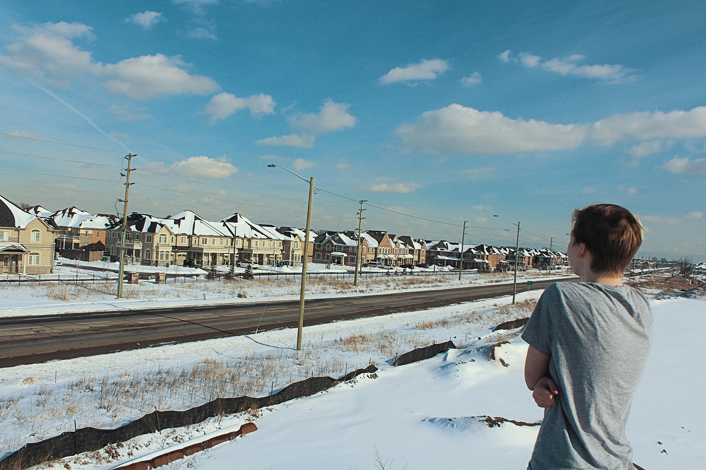
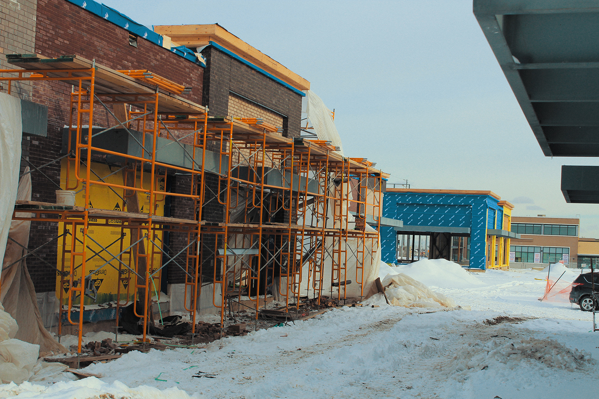
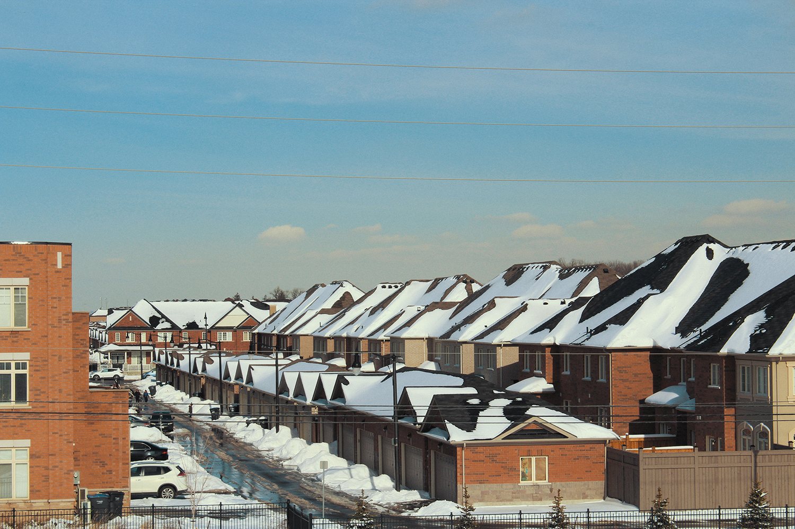

The Suburbs
“The Suburbs” have become such a unique part of contemporary culture, and are equal parts idolized and loathed...
History
Advertisements of the era painted dreamlike scenes of life in the suburbs: Clean houses, friendly neighbors, perfectly mowed lawns, and of course smiling families...

Today
The exact same thing is happening 60 years later. The suburbs never “went away”, housing complexes are marketed to new immigrants seeking the exact same ideals people were seeking then. The suburbs continue to grow and sprawl outwards, creating an endless maze of designer homes and people looking for the dream they were sold...
What's Wrong?
The average 4 bedroom suburban home will sell for upwards of $350 000, and once this transaction is complete, the developer has very little if any involvement with the property...

Response
As the suburbs began to become the new norm, critics were quick to begin to question the new lifestyle. Macleans published an article in 1954 critiquing the “litany of social, environmental, economic and congestion problems arising from these newfangled housing developments”...
The Future
Can we escape the suburbs? Despite a bleak present, a future of connected communities isn’t impossible. It’s a matter of rapid changes in both urban planning and public attitude. Construction of new suburban complexes need to be halted in favor of reworking existing neighborhoods...

The Future
“Build up, not out” is a common phrase in the contemporary urban planning scene, and refers to a necessity to condense neighborhoods and build taller buildings that can house 25 families in the same space that used be taken up by a single suburban home...
The Future
With a new generation of sustainably minded urban planners and designers entering the industry, the future is promising. Companies like Sidewalk Labs are already working on breaking down the boundaries and the legislature fueling suburban sprawl and undertaking massive redevelopment projects to create efficient and sustainable neighborhoods...